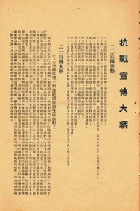

1893
年

1893年11月29日，湖广总督张之洞向清朝光绪帝上奏《设立自强学堂片》。
其以“盖闻经国以自强为本”、“自强之道，以教育人才为先”，取“自强”二字。
而如今规模庞大的武汉大学就起源于“自强学堂”
其以“盖闻经国以自强为本”、“自强之道，以教育人才为先”，取“自强”二字。
而如今规模庞大的武汉大学就起源于“自强学堂”
1893~
1926 年
1926 年
自强学堂起设于湖北武昌三佛阁大朝街口
学堂开办之初，设方言、算学、格致、商务四科。
1896年，矿务、化学并入自强学堂，后增自然、工程教育，方言逐步扩大为英语、法语、德语、俄语、东文（日语）5种语言。
1902年，自强学堂迁往武昌东厂口，改名方言学堂, 课程设有地理、历史、算术、公法、交涉等。
1913年，北洋政府教育部成立后，决定以原方言学堂的校舍、图书、师资为基础，改建国立武昌高等师范学校。
1922年，改四部为8系，即教育哲学系、国文系、英语系、数学系、理化系、历史社会学系、生物系、地质系。
1926年，与国立武昌商科大学、湖北省立医科大学、湖北省立法科大学、湖北省立文科大学、私立武昌中华大学等合并为国立武昌中山大学。
1896年，矿务、化学并入自强学堂，后增自然、工程教育，方言逐步扩大为英语、法语、德语、俄语、东文（日语）5种语言。
1902年，自强学堂迁往武昌东厂口，改名方言学堂, 课程设有地理、历史、算术、公法、交涉等。
1913年，北洋政府教育部成立后，决定以原方言学堂的校舍、图书、师资为基础，改建国立武昌高等师范学校。
1922年，改四部为8系，即教育哲学系、国文系、英语系、数学系、理化系、历史社会学系、生物系、地质系。
1926年，与国立武昌商科大学、湖北省立医科大学、湖北省立法科大学、湖北省立文科大学、私立武昌中华大学等合并为国立武昌中山大学。
1928
年
历经传承演变，1928年，南京国民政府以原国立武昌中山大学为基础，建国立武汉大学，
下设文、法、理、工4个学院，是近代中国第一批国立大学。
1929
年
1929年2月，法学家王世杰成为国立武汉大学首位正式校长。
其聘皮宗石为法学院院长，闻一多为文学院院长、王星拱为理学院院长、石瑛为工学院院长，
提出要把学校办成拥有文、法、理、工、农、医6大学院的万人大学。
其聘皮宗石为法学院院长，闻一多为文学院院长、王星拱为理学院院长、石瑛为工学院院长，
提出要把学校办成拥有文、法、理、工、农、医6大学院的万人大学。
王世杰
字雪艇，湖北崇阳人。著名法学家，民国时期成为国立武汉大学首任校长。
皮宗石
字皓白，湖南长沙人。1928年9月应邀到国立武汉大学任社会科学院教授、院长。
闻一多
本名闻家骅，字友三。中国著名现代诗人、学者、民主战士，1928年8月担任武汉大学文学院院长。
王星拱
字抚五，安徽怀宁人。著名教育家、化学家、哲学家。与王世杰、李四光等负责筹建国立武汉大学，任国立武汉大学化学系首任系主任。
抗战时期
1931年“九一八事变”发生爆发之后，各种抗日救亡运动在武大校园里风起云涌。
1938-1946年，武汉大学西迁四川乐山流亡办学。
在中华民族救亡图存的宏阔背景下，武大师生以超迈、坚韧的精神书写了苦难而又辉煌的历史篇章，
留下了一所大学永不磨灭的文化抗战记忆。

武汉大学师生深入开展对日研究，
并走上街头进行鼓动宣传和培训等工作
武汉大学师生深入开展对日研究，
并走上街头进行鼓动宣传和培训等工作
武大学生组成“抗日铁血团”北上，走向抗战最前沿
武汉大学乐山斑竹湾宿舍第10斋同学合影
1937年8月19日，国民政府教育部长王世杰签发了《战区内学校处置办法》。
1938年4月，武汉被日寇三面包围，武大师生及所有图书仪器设备，从武汉出发，走水路经宜昌、巴东、万州、重庆，抵达乐山，并在此度过了8年时光。
乐山时期，武大在极其艰苦的条件下，迎难而上，坚持教学与科研工作的正常开展，在最困难的环境里创造了历史上最辉煌的成就。
此时武大集聚了高水平的教授110多人，数量位居全国第二，师资力量仅次于西南联大。
1938年4月，武汉被日寇三面包围，武大师生及所有图书仪器设备，从武汉出发，走水路经宜昌、巴东、万州、重庆，抵达乐山，并在此度过了8年时光。
乐山时期，武大在极其艰苦的条件下，迎难而上，坚持教学与科研工作的正常开展，在最困难的环境里创造了历史上最辉煌的成就。
此时武大集聚了高水平的教授110多人，数量位居全国第二，师资力量仅次于西南联大。

武大乐山时期旧址
最终，于1946年10月，武汉大学师生经历了八载炼狱，八载辉煌，终于以胜利凯旋的姿态重回珞珈山。
1949
年

1949年5月，解放军进入武汉市区
中国共产党接管武大的通告
《解放军到武汉后》
1949年4月，武汉百姓中传递着一个惊人的消息：解放区的报纸已经进城了，武汉马上就要解放了。老百姓口中所说的“解放区报纸”就是当时武大的校刊《武大新闻》，在“旧金山广播、伦敦广播”之类电头后面，《武大新闻》报道的全是关于解放区和解放军最新战况，令人耳目一新。 据解放时期武汉大学学生党总支书记吴仲炎回忆，解放前夕的武汉，谣言满天飞，人心动荡。为消除人民的疑虑，武大党总支通过学生自治会出面，邀请湖北爱国人士李书城先生来校讲述赴中原解放区的观感。 国民党反动当局玩弄“和谈”骗局时，国民党华中司令长官白崇禧邀李书城作为“和谈”代表，到中原解放区与共产党谈判，李亲眼看到了解放区欣欣向荣的景象。 “在那边，妇女地位高，活动多，共产党里面有妇女部，男女一律平等……”李书城用亲身经历让人们看到了一个真实的、朝气蓬勃的解放区，对稳定人心起到了十分积极的作用。 与此同时，武大地下党组织还在学校开展多种多样的宣传活动，组织师生扭秧歌，传唱革命歌曲，寓政治教育于文娱活动之中。
1949年3月，学生自治会专门建了一间广播室，每天早晨全校师生做早操时，校园广播里就会响起“东方红，太阳升”的嘹亮歌声。
1949年4月份，按照地下市委命令，吴仲炎组织武大地下党对校产和敌我情况进行全面调查，准备接管学校。
同时发动学生自治会储备粮食，把学校的金圆券全部集中起来换成银元以备不时之需，在校内发行了货币代用券，一时间武汉大学成了白色恐怖下的安全岛，周围市民亲切地称之为“小解放区”。
1949年5月17日，按照事先安排，武大师生将集体列队上街欢迎解放军进城。
当天上午，吴仲炎和几名骨干成员正在发动大家写欢迎人民解放军进城的标语，一名同学突然跑进来报喜：解放军已到了武豹路。 解放军来了。全校沸腾了，师生们放下了手中的工作，跑到街上，一边扭着大秧歌，一边欢呼着迎接亲人解放军……
新中国成立后
1950年代初期，新成立的中华人民共和国政府借鉴苏联的社会主义教育模式，对国内高校进行史无前例的大规模院系调整。
院系调整前武汉大学有6个学院21个系，院系调整后只有文理科目的中文、历史、政治、数学、物理、化学、生物共7个系保留建制
此后数十年，武汉大学逐渐恢复和增设院系专业。
院系调整前武汉大学有6个学院21个系，院系调整后只有文理科目的中文、历史、政治、数学、物理、化学、生物共7个系保留建制
此后数十年，武汉大学逐渐恢复和增设院系专业。
2000
年
2000年，武汉大学与武汉水利电力大学、武汉测绘科技大学、湖北医科大学四校正式合并组建新的武汉大学。
2001年，合并后的武汉大学分为人文科学、社会科学、理学、工学、信息科学、医学六大学部，形成了我们如今的武大。
21世纪
进入21世纪，国内外领导人仍都十分重视武大的发展
国务院总理温家宝参观学校自主创新成果展

习近平总书记考察武汉大学杂交水稻实验基地

英国首相特雷莎·梅对武汉大学进行访问
合校二十多年来，学校综合实力和核心竞争力不断提升。
2020年，学校在软科世界大学学术排名中位列第199位，QS世界大学排名中位列第246位，泰晤士高等教育世界大学排名中位列351-400位。
学校获国家自然科学奖、国家发明奖和国家科技进步奖三大奖共88项，SCI论文数和国家自然科学基金项目数均位列全国高校前列。
在教育部人文社会科学优秀成果奖评选中获奖数居全国高校前三位，国家社科基金课题、教育部社科课题均居全国高校前列。
数十项成果获得国家“五个一”工程奖、国家图书奖等,连续十余次荣获深圳国际高新技术成果交易会优秀产品奖和优秀组织奖。
2020年，学校在软科世界大学学术排名中位列第199位，QS世界大学排名中位列第246位，泰晤士高等教育世界大学排名中位列351-400位。
学校获国家自然科学奖、国家发明奖和国家科技进步奖三大奖共88项，SCI论文数和国家自然科学基金项目数均位列全国高校前列。
在教育部人文社会科学优秀成果奖评选中获奖数居全国高校前三位，国家社科基金课题、教育部社科课题均居全国高校前列。
数十项成果获得国家“五个一”工程奖、国家图书奖等,连续十余次荣获深圳国际高新技术成果交易会优秀产品奖和优秀组织奖。

18年11月29日，Science在线推出武大125周年校庆特刊，介绍武汉大学发展近况，以及人文社科和自然科学的研究进展。校长窦贤康院士发表刊首致辞。
>
2018年6月2日12点13分，武汉大学珞珈一号科学试验卫星由长征二号丁运载火箭搭载成功发射。
如今
回眸过去，筚路蓝缕，励精图治，玉汝于成，珞珈山上风云际会。
董必武、陈潭秋曾在这里指点江山；李四光、闻一多、郁达夫、叶圣陶等曾在这里激扬文字。
一百多年来，武汉大学汇集了中华民族近现代史上众多的精彩华章，形成了优良的革命传统，积淀了厚重的人文底蕴，培育了“自强、弘毅、求是、拓新”的大学精神。武大学生也在这得到充足发展，成为“德智体美劳”全面发展的新时代人才，为国家、为社会贡献出自己的一份力量。
百余年的风雨，百余年的砥砺，百余年的辉煌。
董必武、陈潭秋曾在这里指点江山；李四光、闻一多、郁达夫、叶圣陶等曾在这里激扬文字。
一百多年来，武汉大学汇集了中华民族近现代史上众多的精彩华章，形成了优良的革命传统，积淀了厚重的人文底蕴，培育了“自强、弘毅、求是、拓新”的大学精神。武大学生也在这得到充足发展，成为“德智体美劳”全面发展的新时代人才，为国家、为社会贡献出自己的一份力量。